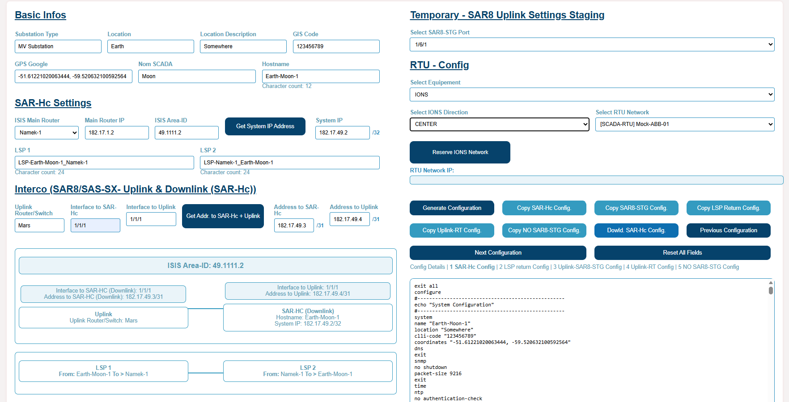

Projects
SAR-HC Router Configuration Automation
This project was developed during my internship at Creos Luxembourg to simplify and accelerate the configuration of Nokia SAR-HC routers. The goal was to build a web-based internal tool that technicians could use to generate configurations faster and with fewer manual errors.
Beyond the interface itself, the project required me to understand the operational logic behind the configuration process, including the basics of MPLS, BGP, addressing, and router deployment workflows. The objective was not only to automate steps, but to make the tool genuinely useful in a real technical environment.
One of the main challenges was backend and API integration. I worked on connecting the application with InfoBlox and other internal services in order to automate tasks such as IP reservation, resource naming, and configuration generation. This meant solving development problems while keeping the tool reliable and easy to use for administrators.
The application was deployed on a Linux Apache server with a frontend built in HTML, CSS, and JavaScript and a backend written in Python. The final result was a successful internal tool that helped reduce repetitive manual work and improve consistency in router configuration. I also personally used the solution to configure multiple SAR-HC devices in practice.
My Role
Developer of the interface and backend integrations, with direct hands-on use of the final solution.
Challenge
Understand router workflows and solve backend/API issues while keeping the tool simple for technicians.
Result
A practical internal tool that sped up configuration work and reduced manual mistakes.

Example of the interface used to generate SAR-HC router configurations and automate network-related inputs.
Interactive Narrative Game
This project was developed as part of a college programming assignment with the objective of building a complete application in a language and environment that were new to us. Our team chose Godot 4.3 and GDScript in order to explore a different development stack while creating a playable game from scratch.
In addition to development, the project focused heavily on team collaboration, documentation, and project management. I took the role of team manager, helping organize the work, coordinate communication, and keep the team aligned with deadlines and deliverables.
The final result was an interactive narrative game combining branching story choices, Dungeons & Dragons-inspired dice mechanics, and platformer gameplay. The project allowed us to build something complete while learning a new language and managing a real development workflow.
My Role
Team manager, contributor to planning, coordination, and communication during development.
Challenge
Build a complete project while learning a new engine and language in a collaborative setting.
Result
A finished interactive game delivered as a team project with structured collaboration and documentation.